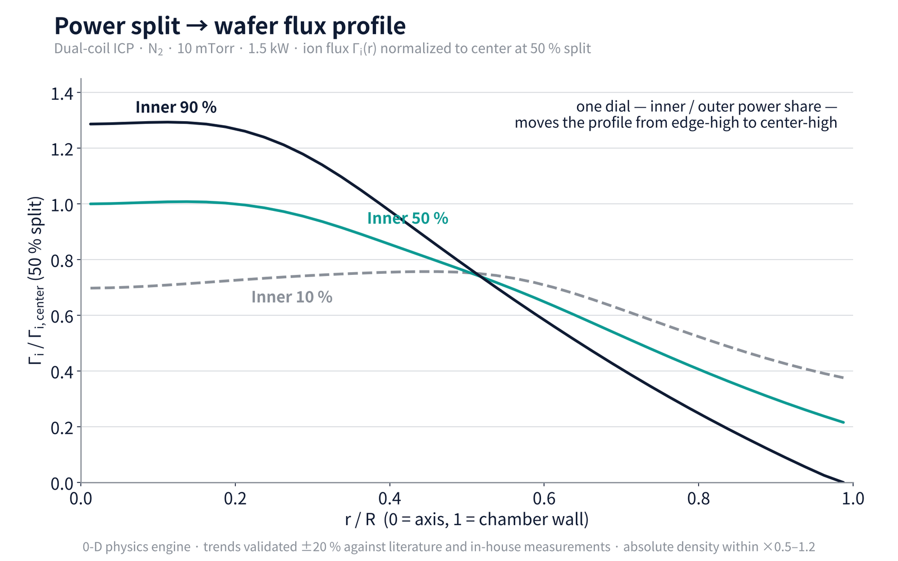
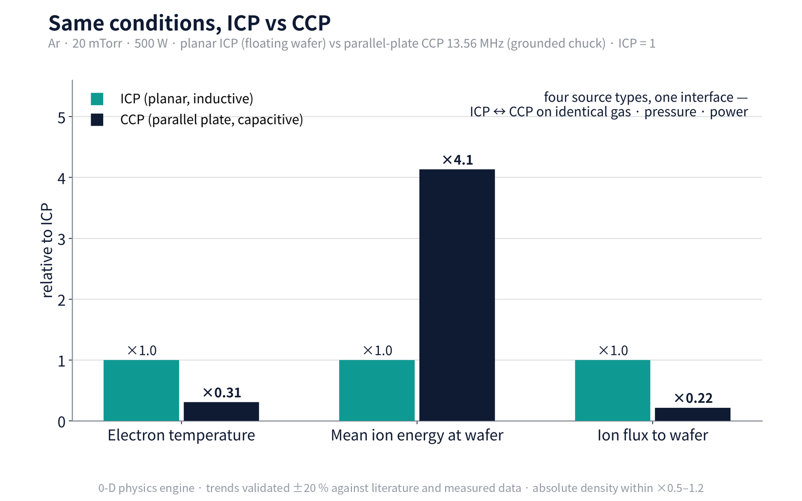

무엇을 받게 되나
이 면에는 세 가지가 있습니다 — 공정 목표에서 설비 제안서까지 간 사례(TwinPath P-1), RF 매칭 결과, 그리고 그 밑에서 물리 엔진이 계산하는 것. 모든 결과는 실험 전의 시뮬레이션이며, 확정은 귀사 설비에서 합니다.
공정 목표에서 설비 제안서까지
TwinPath P-1은 처음부터 끝까지 걸어 본 첫 사례입니다. 고객은 공정 목표만 주고, 요구 스펙과 설비 제안서를 받습니다. 가상 고객 리허설이며, 300 mm 게이트 산화막 플라즈마 질화가 그 예입니다. 여기 적은 값은 모두 설치 전 예측값이고 반올림했습니다.
- 1 · 고객목표공정 목표만
- 2 · 함께요구 스펙정의 · 재는 법 · 우선순위
- 3 · 우리설비 설계소스 구조 세 안 비교, 한 안 권장
- 4 · 우리매칭 · 공정 윈도우구조마다
- 5 · 고객귀사 설비에서 확인만들고 재면 예측값이 확인됩니다
고객이 준 것
| 공정 | 게이트 산화막 플라즈마 질화 · 300 mm |
| 질소 도즈 | 목표 범위 |
| 웨이퍼 안 불균일도 | ≤ 5 % |
| 이온 에너지(손상) | ≤ 20 eV |
| 처리 시간 | 요청 60 s |
| 웨이퍼 온도 | 상온 |
| 설비·공정 자료 | 없음 |
돌려드린 것 — 권장 구조
| 소스 | 이중코일 ICP, 펄스 |
| RF 전력 · 압력 | 약 2 kW · 20 mTorr |
| 이온 에너지 | 약 17 eV (허용 20) |
| 질소 불균일도 | 약 2 % (목표 5) |
| RF 효율 | 약 90 % |
| 매칭 여유 | 약 15 % |
요청 시간 안에 목표 도즈에 닿는 조건 가운데 RF 전력이 가장 낮은 것을 골랐습니다.
제안서에 들어 있는 것
세 구조마다 치수가 적힌 소스 구조도, 부품 범위와 전압이 적힌 매칭 네트워크, 스미스 차트 위의 매칭 윈도우, 압력 × RF 전력의 공정 윈도우가 들어 있습니다.
모든 값은 설치 전 예측값입니다.
제안서 전체
제안서 전체는 비밀유지계약 뒤 공유합니다.
치수, 모델 계수, 고객의 실제 목표 숫자는 이 면에 싣지 않았습니다.
플라즈마에서 매처 사양까지
같은 플라즈마 계산으로 운전 범위 전체의 매처 출력 임피던스, 스미스 차트 위의 매칭 창, 배선 가이드, 그리고 매처 사양(가변 커패시터 범위·정격·발열·효율)을 오차 폭과 함께 범위로 냅니다. 코일 사이 전력 분배와 매처 손실은 플라즈마로 되돌아가 서로 맞을 때까지 계산됩니다.
제안서에 쓰는 오차 폭
| 코일 전류(같은 공급 전력) | ±10 % |
| 매처 출력 임피던스(원통형 솔레노이드, N₂ 저압) | ±15 % |
| 매처 위치(부품 값이 정해진 매처) | ±12 %p |
| 매처 효율(추정) | ±5 %p |
| 부품 정격(kV · A rms) | 설계 범위로 제시 |
참고 근거: 장비별 보정 없이 원통형 실장비와 블라인드 대조 — 코일 전류 ±2~5 %, 매처 출력 임피던스 ±11 %(일부 구성).
지금 상태
| 실장비 대조원통형 솔레노이드·이중코일 | 참고 근거 |
| 기본형 완성평판형·CCP 매처 사양 | 귀사 설비에서 확정 |
계산 범위: 완전 매칭을 가정, 바이어스(척) 매처는 다음 단계. 새 장비는 실측 전에 예측을 기록해 두고, 드리는 절차대로 귀사 설비에서 대조합니다.
매처 사양서 샘플 전체는 비밀유지계약 뒤 공유합니다.
밑에서 엔진이 계산하는 것
0-D 물리 엔진의 계산 결과 네 장과 화면 녹화 하나. 전부 일반 설계·정규화 값이며, 추세는 문헌·실측과 대조해 ±20 % 안, 절대 밀도는 ×0.5~1.2 범위입니다.


